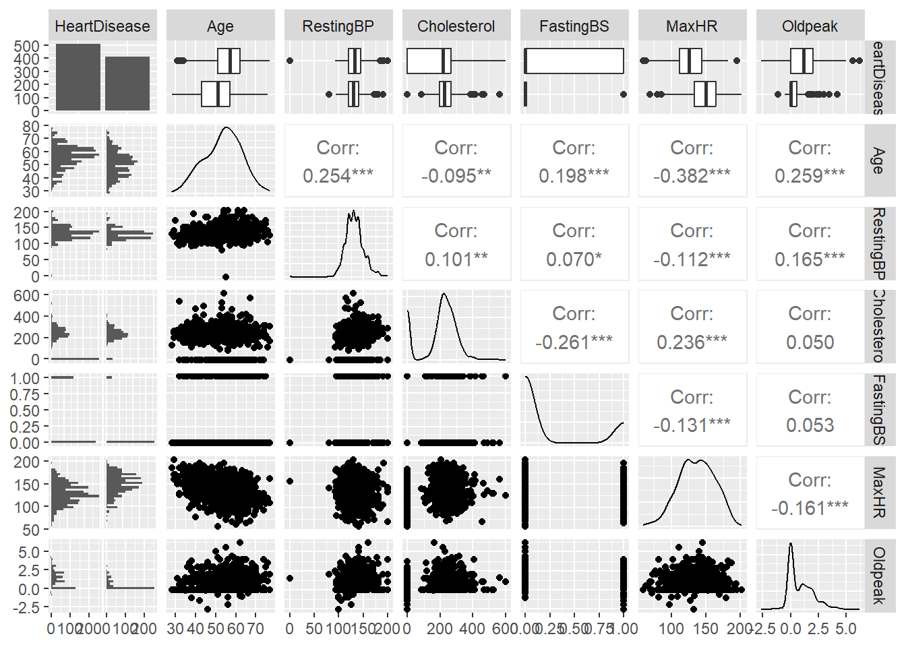

We’ll look at some machine learning modeling concepts and then practice using some methods.
Task 1: Conceptual Questions
What is the purpose of using cross-validation when fitting a random forest model?
We use cross-validation (CV) primarily to prevent overfitting. In the context of fitting a random forest model, we use it to determine the best hyperparameters given the data.
Describe the bagged tree algorithm.
This algorithm uses the standard classification and regression tree. First, it splits the predictor space up to look for cut points that minimize some loss function of interest. It does this repeatedly until the minimization is not useful. Ultimately, predictions consisting of the average response value for a terminal node for a numeric outcome, or the majority vote for a categorical outcome are made. The extra part added is bootstrap resampling to create many resamples, fitting a tree for each resample and creating predictions for each observation, then averaging these for numeric outcomes or taking the most common prediction for categorical outcomes. This averaging improves prediction accuracy at the cost of interpretability.
What is meant by a general linear model?
This is a linear model with a continuous response that allows both continuous and categorical predictors.
When fitting a multiple linear regression model, what does adding an interaction term do? That is, what does it allow the model to do differently as compared to when it is not included in the model?
Interaction terms allow us to capture the change in effect from a predictor on a response in the presence of another predictor. They allow models to capture a multiplicative effect instead of only the additive effect provided by standalone predictors, changing the slopes of the models for each value of another predictor.
Why do we split our data into a training and test set?
To prevent overfitting by confirming our model’s prediction ability can generalize to unseen data, the test set, instead of only relying on the training set, which can produce overly optimisic results.
Task 2: Fitting models.
We now practice fitting some models using the caret package.
We’ll read in data, drop ST_Slope create a heart disease factor variable, do some quick EDA, then preprocess for kNN modeling.
Ingest data, data cleaning, EDA, preprocess
library(readr)library(dplyr)
Attaching package: 'dplyr'
The following objects are masked from 'package:stats':
filter, lag
The following objects are masked from 'package:base':
intersect, setdiff, setequal, union
library(GGally)
Loading required package: ggplot2
Registered S3 method overwritten by 'GGally':
method from
+.gg ggplot2
── Column specification ────────────────────────────────────────────────────────
Delimiter: ","
chr (5): Sex, ChestPainType, RestingECG, ExerciseAngina, ST_Slope
dbl (7): Age, RestingBP, Cholesterol, FastingBS, MaxHR, Oldpeak, HeartDisease
ℹ Use `spec()` to retrieve the full column specification for this data.
ℹ Specify the column types or set `show_col_types = FALSE` to quiet this message.
#### EDA# Look at heart disease rates to get an idea of the no-information rate a model must beattable(heart_disease$HeartDisease) |>prop.table() # guessing majority class means we're right 55% of the time
yes no
0.5533769 0.4466231
# check missingnessheart_disease |>is.na() |>colSums() # no NAs
summary(heart_disease) # cholesterol and resting bp have values of 0
Age Sex ChestPainType RestingBP Cholesterol
Min. :28.00 F:193 ASY:496 Min. : 0.0 Min. : 0.0
1st Qu.:47.00 M:725 ATA:173 1st Qu.:120.0 1st Qu.:173.2
Median :54.00 NAP:203 Median :130.0 Median :223.0
Mean :53.51 TA : 46 Mean :132.4 Mean :198.8
3rd Qu.:60.00 3rd Qu.:140.0 3rd Qu.:267.0
Max. :77.00 Max. :200.0 Max. :603.0
FastingBS RestingECG MaxHR ExerciseAngina Oldpeak
Min. :0.0000 LVH :188 Min. : 60.0 N:547 Min. :-2.6000
1st Qu.:0.0000 Normal:552 1st Qu.:120.0 Y:371 1st Qu.: 0.0000
Median :0.0000 ST :178 Median :138.0 Median : 0.6000
Mean :0.2331 Mean :136.8 Mean : 0.8874
3rd Qu.:0.0000 3rd Qu.:156.0 3rd Qu.: 1.5000
Max. :1.0000 Max. :202.0 Max. : 6.2000
HeartDisease
yes:508
no :410
# checking summaries by heart disease levelheart_disease |>select(HeartDisease, where(is.numeric)) |>ggpairs()
`stat_bin()` using `bins = 30`. Pick better value with `binwidth`.
`stat_bin()` using `bins = 30`. Pick better value with `binwidth`.
`stat_bin()` using `bins = 30`. Pick better value with `binwidth`.
`stat_bin()` using `bins = 30`. Pick better value with `binwidth`.
`stat_bin()` using `bins = 30`. Pick better value with `binwidth`.
`stat_bin()` using `bins = 30`. Pick better value with `binwidth`.

# heart disease and categoricalheart_disease |>select(HeartDisease, where(is.factor)) |>ggpairs()
set.seed(1312)train_test_split <-createDataPartition(heart_disease_dummies$HeartDisease, p =0.8, list =FALSE)heart_train <- heart_disease_dummies[train_test_split,]heart_test <- heart_disease_dummies[-train_test_split,]
kNN Fit
We now fit several kNN models and do some cross-validation using train() from the caret package. We subsequently check performance with confusionMatrix().
# setting cv optionstrain_ctrl <-trainControl(method ="repeatedcv", number =10, repeats =3)# training knn modelsset.seed(1312)knn_fit <-train(HeartDisease ~., data = heart_train, method ="knn",trControl=train_ctrl,preProcess =c("center", "scale"),tuneGrid =data.frame(k =1:40))# test predictionstest_pred <-predict(knn_fit, heart_test)confusionMatrix(test_pred, heart_test$HeartDisease)
Confusion Matrix and Statistics
Reference
Prediction yes no
yes 82 10
no 19 72
Accuracy : 0.8415
95% CI : (0.7804, 0.8912)
No Information Rate : 0.5519
P-Value [Acc > NIR] : <2e-16
Kappa : 0.6829
Mcnemar's Test P-Value : 0.1374
Sensitivity : 0.8119
Specificity : 0.8780
Pos Pred Value : 0.8913
Neg Pred Value : 0.7912
Prevalence : 0.5519
Detection Rate : 0.4481
Detection Prevalence : 0.5027
Balanced Accuracy : 0.8450
'Positive' Class : yes
The kNN model with 9 neighbors performs best here, attaining 84% accuracy compared to a No Information Rate of 55%.
Logistic Regression
Next we’ll fit three logistic regression models. Typically, age and sex seem to be sensible predictors based on medical studies and our EDA above. We can then add cholesterol as we always heart about how bad high cholesterol is for our health. Lastly we can use all predictors.
We’ll do another train/test split though because we don’t need to manually create dummy variables and we’ll run into issues if we use the dummy variable method that keeps a column for every variable.
Once we train the three models, we’ll compare them to see which one we select for test set evaluation.
set.seed(477)train_split_logreg <-createDataPartition(heart_disease$HeartDisease, p = .8, list =FALSE)heart_train_logreg <- heart_disease[train_split_logreg,]heart_test_logreg <- heart_disease[-train_split_logreg,]# basic logreg fitlogreg_fit1 <-train(HeartDisease ~ Age + Sex, data = heart_train_logreg,method ="glm",trControl = train_ctrl,family ="binomial")# adding cholesterollogreg_fit2 <-train(HeartDisease ~ Age + Sex + Cholesterol, data = heart_train_logreg,method ="glm",trControl = train_ctrl,family ="binomial")# all predictorslogreg_fit3 <-train(HeartDisease ~ ., data = heart_train_logreg,method ="glm",trControl = train_ctrl,family ="binomial")# comparing modelsresults <-resamples(list(age_sex = logreg_fit1, age_sex_chol = logreg_fit2, all_vars = logreg_fit3))bwplot(results)
CV results point to the logistic regression model with all predictors doing best. So we’ll use that specification for model summary and our test set evaluation. Note: we set HeartDisease’s reference level to “yes” so the negative coefficients point toward predictors that are associated with a higher heart disease risk.
summary(logreg_fit3)
Call:
NULL
Coefficients:
Estimate Std. Error z value Pr(>|z|)
(Intercept) -0.615393 1.378760 -0.446 0.655353
Age -0.015367 0.013490 -1.139 0.254631
SexM -1.006141 0.271087 -3.712 0.000206 ***
ChestPainTypeATA 2.264999 0.326904 6.929 4.25e-12 ***
ChestPainTypeNAP 1.617530 0.259356 6.237 4.47e-10 ***
ChestPainTypeTA 1.642547 0.433032 3.793 0.000149 ***
RestingBP -0.001799 0.005899 -0.305 0.760333
Cholesterol 0.004420 0.001160 3.811 0.000138 ***
FastingBS -1.338852 0.286548 -4.672 2.98e-06 ***
RestingECGNormal 0.140337 0.279883 0.501 0.616079
RestingECGST 0.524856 0.359976 1.458 0.144832
MaxHR 0.010425 0.004877 2.137 0.032564 *
ExerciseAnginaY -1.271110 0.250682 -5.071 3.97e-07 ***
Oldpeak -0.585924 0.118252 -4.955 7.24e-07 ***
---
Signif. codes: 0 '***' 0.001 '**' 0.01 '*' 0.05 '.' 0.1 ' ' 1
(Dispersion parameter for binomial family taken to be 1)
Null deviance: 1010.42 on 734 degrees of freedom
Residual deviance: 563.28 on 721 degrees of freedom
AIC: 591.28
Number of Fisher Scoring iterations: 5
Confusion Matrix and Statistics
Reference
Prediction yes no
yes 88 22
no 13 60
Accuracy : 0.8087
95% CI : (0.7442, 0.863)
No Information Rate : 0.5519
P-Value [Acc > NIR] : 2.522e-13
Kappa : 0.6093
Mcnemar's Test P-Value : 0.1763
Sensitivity : 0.8713
Specificity : 0.7317
Pos Pred Value : 0.8000
Neg Pred Value : 0.8219
Prevalence : 0.5519
Detection Rate : 0.4809
Detection Prevalence : 0.6011
Balanced Accuracy : 0.8015
'Positive' Class : yes
Our best logistic regression model gets about 80% accuracy on the test set compared to a NIR of 55%. Pretty good!
Tree fits
Now we’ll train three different sets of tree models:
Classification trees using rpart
Random forests using rf
Boosted trees using gbm
I personally prefer using the ranger package for random forests due to speed (C++ under the hood) and lightgbm for boosted trees due to speed/higher memory efficiency!
Since trees do implicit variable selection, I’m just going to use the entire predictor set for the same data used to train the logistic regression models. We’ll create three different data.frames to specify tuning grids for each algorithm.
As before, we’ll compare model performances visually.
set.seed(123)# tuning gridsrpart_grid <-data.frame(cp =seq(0, .1, by =0.001))rf_grid <-data.frame(mtry =1:ncol(heart_train_logreg))gbm_grid <-expand.grid(n.trees =c(25, 50, 100, 200),interaction.depth =1:3,shrinkage =0.1,n.minobsinnode =10)# tree fitsrpart_fit <-train(HeartDisease ~ ., data = heart_train_logreg,method ='rpart',trControl = train_ctrl,tuneGrid = rpart_grid)rf_fit <-train(HeartDisease ~ ., data = heart_train_logreg,method ='rf',trControl = train_ctrl,tuneGrid = rf_grid)# verbose = FALSE to prevent console output from being too clutteredgbm_fit <-train(HeartDisease ~ ., data = heart_train_logreg,method ='gbm',trControl = train_ctrl,tuneGrid = gbm_grid,verbose =FALSE)tree_results <-resamples(list(rpart = rpart_fit, rf = rf_fit, gbm = gbm_fit))bwplot(tree_results)
All the models do pretty well and perform close to each other so we’ll evaluate all three on the test set.
First, let’s grab the test set predictions for each model. Then we’ll look at each confusion matrix separately.
Confusion Matrix and Statistics
Reference
Prediction yes no
yes 92 15
no 9 67
Accuracy : 0.8689
95% CI : (0.8112, 0.9141)
No Information Rate : 0.5519
P-Value [Acc > NIR] : <2e-16
Kappa : 0.733
Mcnemar's Test P-Value : 0.3074
Sensitivity : 0.9109
Specificity : 0.8171
Pos Pred Value : 0.8598
Neg Pred Value : 0.8816
Prevalence : 0.5519
Detection Rate : 0.5027
Detection Prevalence : 0.5847
Balanced Accuracy : 0.8640
'Positive' Class : yes
The test set results for our tree models show that random forest has the best accuracy given this data, with an optimal mtry hyperparameter value of 1.
Wrap up
Based on the test set evaluation results, the random forest model predicts at 85% accuracy, beating the other models.